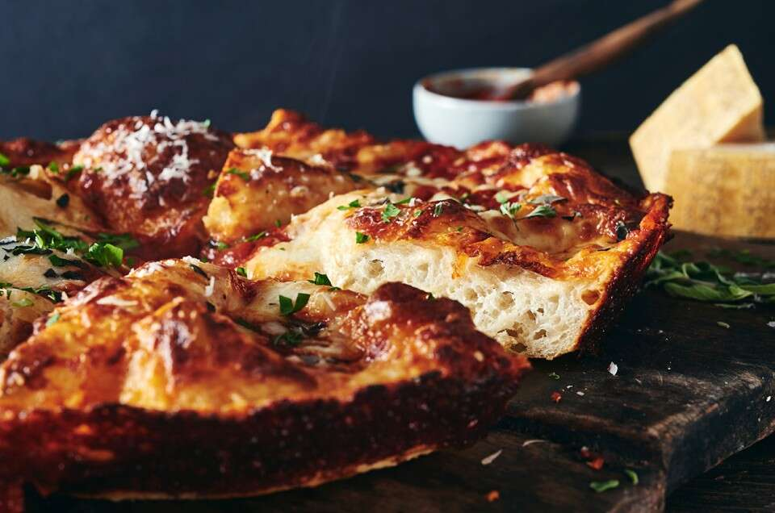

Crispy Pan Pizza

Info
Servings: One 9” to 10” pan pizza
Prep Time: 30 min.
Cook Time: 18-24 min.
Total Time: 16 hrs. 25 mins.
Sauce: link
Ingredients
Crust
- Dry
- 2 cups (240 grams) all-purpose flour
- 3/4 teaspoon salt
- 1/2 teaspoon instant yeast or active dry yeast
- Wet
- 3/4 cup (170 grams) water, lukewarm
- 1 tablespoon (13 grams) olive oil, + 1 1/2 tablespoons (18 grams)
olive oil for the pan
Toppings
- 6 ounces (170 grams) low-moisture mozzarella, grated
- 1/3 to 1/2 cup (74-113 grams) sauce
- Cento Crushed or Ground tomatoes
- splash of olive oil
- seasonings
- Peperoni
- Olives
Cooking Utensils
- 1 mixing bowl
- 1 9-10” cast iron pan
- Cling wrap
Instructions
Dough
- Weigh/measure dry and wet
ingredients into mixing bowl.
- Stir everything for about 1 min. by hand into a shaggy, sticky,
homogenous dough.
- Scrape down sides and cover ball of dough.
- After 5 minutes, uncover the bowl and reach your wet hand down
between the side of the bowl and the dough, stretching the bottom of the
dough over its top. Rotate 90 degrees. Repeat for all cardinal
directions. This is called a fold.
- After recovering and letting it rest for another 5 minutes, do
another fold. Repeat until your 4th fold, then let rest covered for 40
minutes.
- Refrigerate for 12-72 hours.
Cooking Prep
- About 3 hours before you want to serve pizza, pour 1 1/2
tablespoons (18 grams) olve oil into cast iron
pan, covering well.
- Trasnfer dough into oiled pan,
dimple it into the edges of the pan. It may shrink back; that is ok,
just cover it and let it rest for 15 minutes, then repeat. After second
time it shoudld reach edges; if it doens’t, repeat.
- Cover and let rise for 2 hours at room temperature. The fully risen
dough will look soft and pillowy and jiggly.
Cooking
- About 30 minutes before baking, place one rack at the bottom of the
oven and one toward the top and then preheat to 450°F.
- Sprinkle about three-quarters of the mozzeralla evely and completely
over curst.
- Dollop of sauce over the cheese in small spoonfuls, then cover with
remaining cheese and then rest of toppings.
- Bake on bottom rack for 18-20 minutes, until the chesse is bubbling
and the bottom and edges of the crust are a rich golden brown.
- Use best judgment to cook on either top or bottom rack for 2-4
minutes.
- Remove pizza and run a table knife along side of the pan. Let pizza
cool enough to be transfere to drying rack.
Notes
Storage